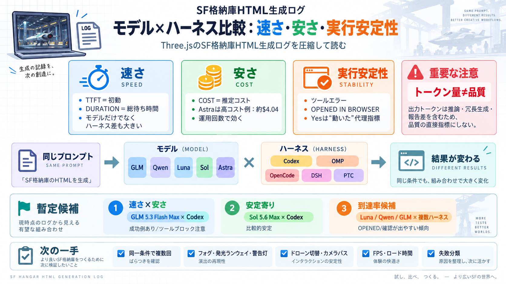

GLM-5.3-Flash vs Qwen3.8 27B (low): Model Comparison | Artificial Analysis
Qwen3.8 27B (low) is faster. Qwen3.8 27B (low) generates 56.8 tokens per second, compared with GLM-5.3-Flash at 50.2 tok…

ログを読む / Read the log
Three.jsで「SF風の格納庫（ハンガー）」を自己完結HTMLで生成する試行ログを、速さ・安さ・実行安定性の観点で圧縮して読み解きます。
同じプロンプトでも
同じプロンプトでも、モデル（GLM/Qwen/Luna/Sol/Astra）とハーネス（Codex/OMP/OpenCode/DSH/PTC等）の組み合わせで、速度（TTFT/DURATION）・生成量・失敗・最終表示到達率が変わります。
さらにログは推定レートとログ情報のみで、見た目やFPSなどの厳密な採点手順は含まれていない点に注意が必要です。
指標は「動作」中心
「OPENED IN BROWSER=Yes」「CHECKED SCREENSHOTS」などは、完成度（見栄え）そのものではなく“動く成果物に到達したか”の代理指標として効きます。
3つで決める
このログ比較は、(i) 初動の速さ、(ii) 推定コスト、(iii) ツールエラーとブラウザ確認到達をセットで見て、暫定的な最適組み合わせを探っています。
TTFTが短いほど
GLM 5.3 Flash Max × Codex は TTFTが非常に短く DURATION も9分台の例がある一方、別行ではGLM/OMPが30分台に伸びるなど“ハーネス差”が強く示唆されます。
“開けるか”が鍵
GLM 5.3 Flash Max × Codex はツールエラー=1・OPENED IN BROWSER=Noの例があり、最終成果物到達の難しさが見えます。一方で Luna 5.6 Max × Codex や Sol 5.6 Max × Codex は “Yes” が出やすい傾向です。
コストの桁が違う
Astra 6.0 Max × Codex は総コスト推定が約 $4.04 と突出し、TTFTが短い可能性があっても“常に最良”とは断定しづらいです。運用回数が増えるほど不利になり得ます。
トークン量≠品質
ログ上の出力トークンは「推論を含む生成総量」として計上され、さらにハーネスにより推論報告の内訳が揺れるため、トークン数を品質の直接指標とみなすのは危険です。
結論（暫定）
速度・コスト・実行安定性のバランスでは「GLM 5.3 Flash Max × Codex」「SOL 5.6 Max × Codex」が有力です。さらに“確実にブラウザ確認まで到達”しやすい候補として「Luna / Qwen / GLM の複数ハーネス」が強い方向性です。
次は採点を揃える
ログには“要件を全て満たしたか”の厳密採点がないため、同一組み合わせで複数回生成し、表現要件をチェックリスト化して評価するのが次の一手です。
“Yes”は代理証拠
OPENED IN BROWSER=Yes はコードが開いたことを示唆しますが、レンダリング見栄えや要件（フォグ、発光、切替、カメラパス）を全て満たしたかはこのログだけでは確定できません。
最終判断は目的次第
最適解は「要件充足（確実に走るHTML）を最優先」するか、「コスト/待ち時間を抑える」かで変わります。このログの暫定候補はGLM系/ Sol系/ Luna・Qwen系が中心です。
Takeaway：速度はTTFT、安定性はツールエラーとブラウザ到達、コストはモデル単価＋キャッシュ挙動。トークン数は参考止まりです。
Qwen3.8 27B (low) is faster. Qwen3.8 27B (low) generates 56.8 tokens per second, compared with GLM-5.3-Flash at 50.2 tok…
Table 5. Economic break-even: tokens-per-hour of sustained traffic required for self-hosting to match API cost. Calculat…
$177 /mo Monthly = daily × 30. Discounted rates applied where a promotion is active. ## FAQ Which is cheaper: GLM 5.3…
GLM-5.3 Flash and Qwen 3.8 Flash are both open weight “flash” models built for fast, cheap agentic coding work, and a di…
by inclusionaiSep 4, 2026262K context$0/M input tokens$0/M output tokens Qwen: Qwen3.8 Max (0902)Qwen3.8 Max (0902) …